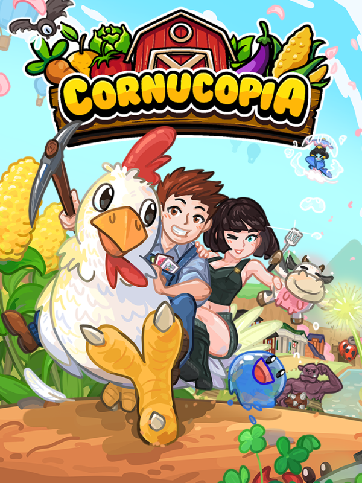

Cornucopia
Cornucopia
Details
|  | |
| Playtime | 2h 30m 0s |
| Last Activity | 2024-07-20 0:18:23 |
| Added | 2024-07-11 10:25:17 |
| Modified | 2025-10-02 9:50:44 |
| Completion Status | Played |
| Library | Steam |
| Source | Steam |
| Platform | PC (Windows) |
| Release Date | 2023-07-31 |
| Community Score | |
| Critic Score | |
| User Score | |
| Genre | Adventure Indie Role-playing (RPG) Simulator |
| Developer | Subconscious Games |
| Publisher | Subconscious Games |
| Feature | Single Player |
| Links | Steam Twitch Discord Official Website YouTube Epic Subreddit Community Wiki Bluesky |
| Tag | Adventure Agriculture Building Casual Cooking Crafting Cute Dating Sim Exploration Farming Sim Fishing Life Sim Mining Open World Pixel Graphics Relaxing RPG Sandbox Simulation Singleplayer |
Description
✨ Stardew Valley meets Paper Mario! ✨
(Stardew Valley® and Paper Mario® are registered trademarks of their respective owners. Used only for descriptive purposes. No affiliation or endorsement implied.)

Farm, build, romance, and raise magical animals in a cozy 2.5D world. Never worry about bedtime. Grow crops with real soil science and fall for 34+ characters. Every choice shapes your story in Cornucopia®.

Unearth the mystery: Thawed after a century, you wake among curious villagers. A camera-loving conspiracy theorist shadows your steps. Deep below, relics and gemstone fruits await.
No forced bedtime: Play all night. Never pass out, total freedom.
Romance 34+ characters: Pick your love. 34+ fully romanceable villagers.
Raise magical animals: Hatch, breed, collect rare traits.
Real soil science: Balance nutrients, soil, and compost for mega harvests.
Build your dream farm: Customize, expand, decorate in beautiful 2.5D.
Secrets everywhere: Lost relics, hidden quests, endless discoveries.
Zero stress: Escape, relax, play your way, your pace.
🛒 Wishlist & Follow Cornucopia® for updates, polls, and surprises!

Cozy Quality-of-Life Features Built for Relaxed Mastery
Cornucopia® was built for comfort, charm, and play-your-way design:
No Bedtime Pressure: Stay up as long as you want. No forced sleep or pass-outs.
Camera Angle Freedom: Adjust tilt, zoom, and FOV to play your way. Paper Mario-style, or more like classic Harvest Moon or Stardew.
Overflow Inventory: Extra items go straight to storage. No more full bag frustration.
Tools Level by Use: Your watering can and axe grow stronger just by using them.
Adjustable Game Speed: Slow things down for immersion or speed up to boost efficiency.
Frequent Updates & Polls: Join our active community and help shape the future of Cornucopia.

Raise Adorable Animals & Discover Genetic Surprises
From tiny chicks to hardworking cows, every animal grows stronger as they level up. Chop trees with a horse, race a wild chicken, or even bond with playful slimes. Breed pets across generations to unlock rare colors and patterns, ensuring your farm feels magical and personal. Why settle for ordinary when you can raise a dazzling midnight-blue cow?

Customize & Expand: It’s All Yours
Upgrade your house, barn, coop, and shed, expand your soil area, and repair the greenhouse to unlock powerful bonuses. Build new spots like the Hot Springs, or move into charming homes like the Beach Villa, Treehouse, or Mountain Lodge. With smart storage and customizable interiors, every space becomes your cozy masterpiece.

Befriend Villagers & Visit Their Homes
Charm 50+ villagers, build bonds through gifts and chats, and even customize their rooms once you're close. Whether you're sharing gossip or going on dates, friendships evolve naturally. And some may blossom into something more.

Grow 74 Crops, 50 Trees & 15 Berry Bushes. Fueled by Living Soil
Master deep farming with NPK compost. Balance nitrogen, phosphorus, and potassium to boost growth, yield, and unlock rare seasonal and soil-based crop boosts. Grow legendary crops like wasabi and vibrant greenhouse watermelon hybrids, or take it slow and let nature unfold. Season, soil, and compost all shape your harvest. Your farm, your strategy.

Magical Kids, Meaningful Bonds
Marry one of 34+ eligible characters. From spirited youths to wise elders. And raise a child who grows from Baby to Toddler to Child. Your partner shapes your child. Wizard kids, kappa offspring, mysterious spirit children, goddess babies and more. It’s your unique family story, woven with cozy love and magic.

Fishing, Arcade Games & Mini-Game Mayhem
Use our bounce-style fishing system to hook quirky catches, then hit the Arcade to play 10+ mini-games. Including coin-pushers, claw machines, shooters, and pet races. There’s always something lighthearted to do between harvests.

Buffs, Cards & Hidden Surprises
Collect cards to unlock powerful buffs like Double Jump, Underwater Breathing, and Auto-Revive. Complete monster quests and neighbor tasks to earn rewards, and discover economic perks like Shop Discounts, Faster Refining, or More Rare Fish. New cards appear each run. You never know what surprises await!

Replayable Adventures & Dynamic Discovery
Random NPC Birthdays & Gifts: Each save shuffles favorite items and celebrations.
Animals with Personality: Pets arrive with likes, dislikes, and hidden abilities you can breed into future generations.
Unique Gear Bonuses: Every weapon or hat offers randomized stats. Your loadout is always personal.
Procedural Combat Zones: Battle in dungeons filled with rare enemies, secret bosses, and treasure rooms. Loot awaits!

2.5D World Built for Cozy Wonder
Zoom in to admire tiny farming details or pull back to plan your next expansion. Mix crops, orchard trees, berry bushes, and paths to make a layout that’s all your own. With multiple regions and seasonal visuals, your farm will feel alive year-round.


Maps, Fast Travel & Zero Stress
Discover waypoints and zip around town easily. Your map shows where everyone is. No more guesswork. Whether you're delivering gifts or prepping for a festival. Everything’s just a hop away.

Combat & Boss Battles
Take on dungeons with 11+ weapon types, strategic gear, and epic bosses. Explore at your own pace. Or push deeper for rare loot, unique rooms, and thrilling surprises.

Whimsical Hats & Fashion Freedom
Collect over 90+ hats that add stat boosts or just look fabulous. From silly to sleek, every outfit tells your story.

Celebrate All Year Long
From the Chicken Festival to the cozy mountaintop Fireworks Night, every seasonal event brings its own gameplay, music, and charm. Join contests, bond with villagers, and create heartwarming memories all year long.

Auction House & Collectible Finds
Bid for rare animals, decorations, and rare finds in exciting auctions. Compete, win, and flex your farming prestige.

200+ Recipes, Custom Meals
Cook 200+ dishes using ingredients and monster drops. Your kitchen is a cozy space for expression and mastery. Choose from cookware like a Frying Pan, Bain Marie, or even a Fusion Cooker. Each unlocks different boosts in dish value. And don’t miss the Cooking Festival at Chef Simon’s restaurant to show off your skills and earn rewards.

Achievements, Badges & No Pressure
Unlock 97 achievements and 5 badges while playing entirely at your own pace. There’s a rich story path to follow if you choose. But no pressure. Control the game speed, skip the clock stress, and enjoy Cornucopia your way.

72 Original Tracks for Every Mood
Lose yourself in a sweeping, handcrafted soundtrack that shifts with weather, season, and time of day.

Choose Your Own Path.
Every choice, from your spouse to your soil mix, shapes a new life. Whether you're chasing magic, family, or just some peace in the orchard. You’ll find it here.

Your cozy story begins today. Buy Cornucopia® Now!

📝 Love the game?
If Cornucopia® brought you joy, leaving a review on Steam means the world to me. It helps other players discover the game, guides future updates, and honestly, it lifts my spirits more than you might think.
Thank you for being part of this journey.
Lots of Love, David 💛
🌱 Wishlist & Follow Cornucopia® for cozy updates, dev polls, and sneak peeks.